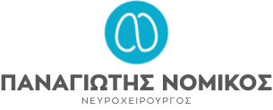

<!DOCTYPE html>
<html>
    <head>
        <title>ΠΑΝΑΓΙΩΤΗΣ ΝΟΜΙΚΟΣ</title>
        <meta charset="UTF-8">
    <meta http-equiv="X-UA-Compatible" content="IE=edge">
    <meta name="viewport" content="width=device-width, initial-scale=1.0">
        <link rel="stylesheet" href="./style.css" />
    </head>
    <body>
        <header>
            <div class="search">
                <input type="text" placeholder="Αναζήτηση"/>
                <a href="#"></a>
            </div>
            <div class="container">
                <div class="branding">
                    
                </div>
            </div>
        </header>

        <nav class="navigation">
            <div class="container">
                <ul>
                    <li>
                        <a href="#">ΒΙΟΓΡΑΦΙΚΟ</a>
                    </li>
                    <li class="dropdown">
                        <a href="#">ΧΕΙΡΟΥΡΓΙΚΗ ΕΓΚΕΦΑΛΟΥ</a>
                            <ul class="brain-menu">
                                <li><a href="#">Χειρουργικές Τεχνικές</a></li>
                                <li><a href="#">Όγκοι Εγκεφάλου</a></li>
                                <li><a href="#">Υδροκέφαλος</a></li>
                                <li><a href="#">Αγγειακές Παθήσεις</a></li>
                                <li><a href="#">Λειτουργική Νευροχειρουργική</a></li>
                                <li><a href="#">Κακώσεις</a></li>
                                <li><a href="#">Νέες τεχνικές</a></li>
                            </ul>

                    </li>
                    <li>
                        <a href="#">ΧΕΙΡΟΥΡΓΙΚΗ ΣΠΟΝΔΥΛΙΚΗΣ ΣΤΗΛΗΣ</a>
                    </li>
                    <li>
                        <a href="#">ΑΚΤΙΝΟΧΕΙΡΟΥΡΓΙΚΗ Γ-KNIFE</a>
                    </li>
                    <li>
                        <a href="#">ΕΠΙΚΟΙΝΩΝΙΑ</a>
                    </li>
                </ul>
            </div>
        </nav>

        <section id="highlight">
            <div id="slide">
                <div class="container slide-wrapper">
                    <div class="slide-text">
                        <h1>Δρ. Παναγιώτης Νομικός <span>Νευροχειρουργός</span></h1>
                        <p>Περιηγηθείτε στις σελίδες και ενημερωθείτε για θέματα νευροχειρουργικής.</p>
                        <p>Για οποιεσδήποτε απορίες σας περιμένουμε να επικοινωνήσετε μαζί μας.</p>
                        <div class="btns">
                            <div class="btn-style btn-more">
                                <a href="#"><h4>ΠΕΡΙΣΣΟΤΕΡΑ</h4></a>
                                    <a href="#"></a>
                            </div>
                            <div class="btn-style btn-contact">
                                <a href="#"><h4>ΕΠΙΚΟΙΝΩΝΗΣΤΕ ΜΑΖΙ ΜΑΣ</h4></a>
                                <a href="#"></a>
                            </div>
                        </div>
                    </div>
                </div>
            </div>
        </section>

        <section id="highlight2">
            <div class="surgery">
            <div class="container images">
                <div class="img-style image1">
                    <div class="text-background">
                       <a href="#"><h4>ΧΕΙΡΟΥΡΓΙΚΗ<br><span>ΕΓΚΕΦΑΛΟΥ</span></h4></a>
                       <a href="#"></a>
                    </div>
                </div>


                <div class="img-style image2">
                    <div class="text-background">
                        <a href="#"><h4>ΧΕΙΡΟΥΡΓΙΚΗ<br><span>ΣΠΟΝΔΥΛΙΚΗΣ ΣΤΗΛΗΣ</span></h4></a>
                        <a href="#"></a>
                     </div>
                </div>
                <div class="img-style image1">
                    <div class="text-background">
                        <a href="#"><h4>ΑΚΤΙΝΟΧΕΙΡΟΥΡΓΙΚΗ<br><span>Γ-KNIFE</span></h4></a>
                        <a href="#"></a>
                     </div>
                </div>
            </div>    
            </div>
        </section>

        <section id="highlight3">
            <div class="details">
                <div class="text purpose">
                    
                    <h3>ΣΚΟΠΟΣ</h3>
                    <p>Η καλύτερη πληροφόρηση για την πλήρη κατανόηση της φύσης της ασθένειας από τον ασθενή αλλά και τους οικείους του,
                    με σκοπό τη συμμετοχή όλων στη διαδικασία επιλογής της κατάλληλης θεραπείας, προκείμενου να επιτευχθεί το επιθυμητό 
                    αποτέλεσμα.
                    </p>
                </div>

                <div class="text philosophy">
                    
                    <h3>ΦΙΛΟΣΟΦΙΑ</h3>
                    <p>Κάθε ασθενής είναι ξεχωριστός και ο τρόπος αντιμετώπισης της ασθένειάς του πρέπει να εξατομικεύεται συνδυάζοντας
                     όλες τις νέες εξελίξεις και τεχνολογίες, που προσφέρονται στον τομέα της νευροχειρουγικής.
                    </p>
                </div>

                    <div class="text specificity">
                        
                        <h3>ΕΞΙΔΕΙΚΕΥΣΗ</h3>
                        <p>Χειρουργική βάσεως κρανίου, Όγκοι εγκεφάλου και σπονδυλικής στήλης, Διασφηνοειδικές επεμβάσεις όγκων υποφύσεως,
                         Χειρουργική σπονδυλικής στήλης, Ελάχιστα επεμβατικές τεχνικές, Νευροπλοήγηση, Νευροενδοσκόπηση, 
                         Λειτουργική Νευροχειρουργική, Ακτινοχειρουργική γ-knife.
                        </p>
                   </div>
            </div>
        </section>

        <section id="highlight4">
            <div class="testimonials">
                <div class="left">
                    <h3 style="color:#58585A;">ΟΙ ΑΣΘΕΝΕΙΣ ΜΑΣ<span style="font-weight: 100;"> ΕΙΠΑΝ </span> </h3>
                    <div class="text-container">
                    <div class="img-quotes" >
                        
                    </div>
                    <div class="text-patient">
                        <p>Ένα μεγάλο ευχαριστώ είναι ίσως λίγο για να εκφράσει την ευγνωμοσύνη που νιώθω για τον γιατρό μου Κο Π. Νομικό. 
                            Το Σεπτέμβριο του 2009 ανακάλυψα ότι είχα έναν όγκο στον εγκέφαλο.<br> Μετά το αρχικό σοκ, 
                            επισκεφτήκαμε με τον σύζυγο μου αρκετούς νευροχειρούργους σε Αθήνα και Θεσσαλονίκη. 
                            Πήραμε επίσης γνώμες από δύο γιατρούς του εξωτερικού [...] <br><span style="font-weight: bold;">--Ρουθ Π., Αθήνα.,</span> 
                        </p>
                        <div class="arrows">
                            <a href="#"></a>
                            <a href="#"></a>  
                        </div>
                    </div>
                </div>
                </div>

            <div class="right">
                <h3 style="color: #58585A;">ΔΙΑΔΙΚΑΣΙΑ ΕΝΗΜΕΡΩΣΗΣ<br><span style="font-weight: 100;"> ΚΑΙ ΣΥΓΚΑΤΑΘΕΣΗΣ</span>
                    <br><span style="font-weight: 100;"> ΤΟΥ ΑΣΘΕΝΟΥΣ</span></h3>
                    <div class="text-procedure">
                        <p>Η πραγματική ιατρική ενημέρωση και συγκατάθεση του ασθενούς είναι πολύ σημαντική διαδικασία.
                             Γίνεται βήμα – βήμα και ο ασθενής αναλαμβάνει την ευθύνη για μια σειρά αποφάσεων.</p>  
                             <div class="btn-style btn-more">
                                <a href="#"><h4>ΠΕΡΙΣΣΟΤΕΡΑ</h4></a>
                                    <a href="#"></a>
                            </div>
                    </div>             
             </div>
            </div>
        </section>

        <section id="highlight5">
            <div class="information">
                <div class="text-info">
                    <h3 style="color:#58585A;">ΠΛΗΡΟΦΟΡΙΕΣ<br><span style="font-weight: 100;"> ΓΙΑ ΤΟΝ ΑΣΘΕΝΗ </span> </h3>
                    <p>Κατεβάστε τα ενημερωτικά μας έντυπα για την δική σας πληροφόρηση.</p>
                    <div class="arrows">
                        <a href="#"></a>
                        <a href="#"></a>  
                    </div>
                </div>
                <div class="img-info">
                    <div class="info-style tumour">
                        <div class="info-background">
                            <h5>ΟΓΚΟΙ ΕΓΚΕΦΑΛΟΥ</h5>
                         </div>
                    </div>
                    <div class="info-style waist">
                        <div class="info-background ">
                            <h5>ΠΟΝΟΣ ΣΤΗ ΜΕΣΗ</h5>
                         </div>
                    </div>
                    <div class="info-style diagnostics">
                        <div class="info-background extra1">
                            <h5>ΔΙΑΓΝΩΣΤΙΚΕΣ<br>ΕΞΕΤΑΣΕΙΣ</h5>
                         </div>
                    </div>
                    <div class="info-style biopsy">
                        <div class="info-background extra2">
                            <h5>ΕΛΑΧΙΣΤΑ ΠΑΡΕΜΒΑΤΙΚΗ ΣΤΕΡΕΟΤΑΚΤΙΚΗ ΒΙΟΨΙΑ ΕΓΚΕΦΑΛΟΥ ΜΕΣΩ ΝΕΥΡΟΠΛΟΗΓΗΣΗΣ</h5>
                         </div>
                    </div>
                </div>
            </div>
        </section>

        <section id="highlight6">
            <div class="download">
                <div class="text-download">
                    <h4>Κατεβάστε την εφαρμογή<span style="font-weight: 100;"> του Δρ. Παναγιώτη Νομικού Νευροχειρούργου</span></h4>
                </div>
                <div class="logos">
                    <a href="https://www.apple.com/app-store/" target="_blank"></a> 
                    <a href="https://play.google.com/store/games?hl=el"  target="_blank"></a> 
                </div>

            </div>
        </section>

        <section id="highlight7">
            <div class="bottom-nav">
                <div class="nav-list lineh1">
                   <h4>ΧΕΙΡΟΥΡΓΙΚΗ ΕΓΚΕΦΑΛΟΥ</h4>
                    <ul>
                        <li><a href="#">Χειρουργικές Τεχνικές</a></li>
                        <li><a href="#">Όγκοι Εγκεφάλου</a></li>
                        <li><a href="#">Υδροκέφαλος</a></li>
                        <li><a href="#">Αγγειακές Παθήσεις</a></li>
                        <li><a href="#">Λειτουργική Νευροχειρουργική</a></li>
                        <li><a href="#">Κακώσεις</a></li>
                        <li><a href="#">Νέες τεχνικές</a></li>
                    </ul>
                </div>
                <div class="nav-list lineh2">
                    <h4>ΧΕΙΡΟΥΡΓΙΚΗ ΣΠΟΝΔΥΛΙΚΗΣ ΣΤΗΛΗΣ</h4>
                    <ul>
                        <li><a href="#">Γενικές Πληροφορίες</a></li>
                        <li><a href="#">Οσφυική μικροδισκεκτομή </a></li>
                        <li><a href="#">Αυχενική μικροδισκεκτομή</a></li>
                        <li><a href="#">Σπονδυλοδεσία</a></li>
                        <li><a href="#">Όγκοι σπονδυλικής στήλης και νωτιαίου μυελού</a></li>
                        <li><a href="#">Νέες τεχνικές</a></li>
                        
                </div>
                <div class="nav-list lineh2">
                    <h4>ΑΚΤΙΝΟΧΕΙΡΟΥΡΓΙΚΗ Γ-KNIFE</h4>
                    <ul>
                        <li><a href="#">Τι είναι το γ-κnife;</a></li>
                        <li><a href="#">Ποιες παθήσεις επιδέχονται γ-knife;</a></li>
                        <li><a href="#">Ποια είναι τα βήματα της θεραπείας;</a></li>
                        <li><a href="#">Τι μετεγχειρητική παρακολούθηση χρειάζεται;</a> </li>
                        <li><a href="#">Ποια είναι η διαδικασία έγκρισης της θεραπείας από ασφαλιστικούς φορείς;</a></li>
                        <li><a href="#">Τι πρέπει να προσέξω την ημέρα της θεραπείας;</a></li>
                </div>

            </div>
        </section>
        
        <footer>
            <div class="footer-container">
                <div class="text-up">
                    <div class="up-left">
                        
                        <p>Πληρούμε τις προδιαγραφές του κώδικα δεοντολογίας «Health on the Net» (HON) περί 
                            αξιόπιστων πληροφoριών υγείας. Επιβεβαιώστε.</p>
                    </div>
                    <div class="up-right">
                        <ul>
                            <li><a href="#">SITE MAP</a></li>
                            <li><a href="#">ΟΡΟΙ ΧΡΗΣΗΣ</a></li>
                            <li><a href="#">LINKS</a></li>
                        </ul>
                    </div>
                </div>

                <div class="text-down">
                    <p>© 2015 Παναγιώτης Νομικός - Το περιεχόμενο της ιστοθέσης είναι μόνο για ενημερωτικό σκοπό και δεν θα πρέπει 
                        να αντικαθιστά οποιαδήποτε ιατρική συμβουλή, διάγνωση ή και θεραπεία που χορηγείται από τον γιατρό σας ή από 
                        τον εξειδικευμένο επιστήμονα υγείας. Απαγορεύεται η αναπαραγωγή, μεταβίβαση, διανομή ή αποθήκευση μέρους ή 
                        του συνόλου του περιεχομένου σε οποιαδήποτε μορφή, χωρίς την προηγούμενη γραπτή συγκατάθεση του κ. Παναγιώτη Νομικού.</p>
                </div>
            </div>
        </footer>
    </body>
</html>
